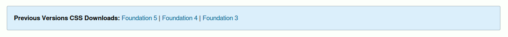

Lo básico
Lo primero que debemos hacer es entrar en el sitio web de Foundation para descargar los archivos de este framework, para ello acedemos al siguiente link https://foundation.zurb.com/sites/download.html/ , allí encontraremos varias formas para descargar el mencionado.
- Complete escoge esta versión de Foundation si quieres todo en el marco en CSS y JS simples.
- Essential versión simple y ligera que incluye tipografía, cuadrícula, botones, Revelar e Intercambio.
- Custom Incluye o elimina ciertos elementos y define el tamaño de las columnas, los colores, el tamaño de la fuente y más.
- Sass Foundation está construido con SCSS, y puede trabajar con él de la misma manera.
Si desea descargar versiones anteriores de Foundation, puede usar este aparte
Para mayor información, consulte las instrucciones en la página de instalación de la documentación.
Personalizar la descarga de Foundation
Elija las características que desee o tenga toda la enchilada.
Escoja sus componentes
Al marcar esta casilla de verificación se agregará a la descarga todas las clases de todos los componentes contemplados en Foundation, a excepción de las Prototyping Helpers (clases de prototipado), las cuales deben ser seleccionadas de forma reiterativa.
Con estas opciones podemos definir que tipo de grilla queremos usar para nuestro proyecto, o si no queremos ninguna grilla.
En general, flex y float usan los mismo nombres para las clases, (salvo excepciones), en cambio, el tipo XY usan otros muy distintos, por ejemplo en vez de row usan grid-x, y en vez de column usan cell (solo por nombrar algunas).
Es importante señalar que para este ejercicio seleccionamos la opción Grid: Flex Grid, para poder trabajar con Flexbox, ya que es más versatil y moderno.
Con estas casillas de verificación podemos escoger de manera individual que clases de las contempladas en Foundation se agregará a la descarga.
Esta selección debe obedecer al diseño previo de nuestro proyecto, ya que si bien es cierto que la limitación de clases hará más ligero nuestro CSS, una vez que se descarge el paquete de archivos, no podrán agregarse nuevas clases de manera automática, limitando así la capacidad de nuestro CSS.
Establezca sus valores predeterminados
Aquí podemos definir el número de columnas (# of Columns) que deseamos para nuestro proyecto, que no necesariamente debe ser de 12.
Así mismo el espacio entre cada una de estas columnas conocido como Gutter (Total Gutter).
Finalmente podemos definir el ancho máximo de nuestras columnas (Max-Width).
Aquí podemos indicar cuales colores queremos para los distintos estilos y clases predeterminados de nuestro proyecto como lo son: Primary Color, Secondary Color, Alert Color, Success Color, Warning Color.
Así como también el color predeterminado para el texto en general (Body Font Color) y el de los encabezados (Header Font Color).

Indiquemos aquí el valor estandar para el border-radius de los elementos de nuestro proyecto.
Aquí se especifica la dirección en que se leerá el texto del proyecto.
Una vez especificados todos los parámetros con este botón se descarga el paquete de archivos necesarios.
Información complementaria
Hay que aclarar que Foundation tiene en la actualidad 3 sistemas de grillas:
- Grilla XY
- Grilla usando float
- Grilla usando flex
En general, flex y float usan los mismo nombres para las clases, (salvo excepciones), en cambio, el tipo XY usan otros muy distintos, por ejemplo en vez de row usan grid-x, y en vez de column usan cell (solo por nombrar algunas).
Es importante señalar que para este ejercicio seleccionamos la opción Grid: Flex Grid, para poder trabajar con Flexbox, ya que es más versatil y moderno.
Nota: La grilla con Flexbox solo se admite en Chrome, Firefox, Safari 6+, IE10 +, iOS 7+ y Android 4.4+. Flexbox es compatible con Android 2, pero no lo suficientemente confiable.